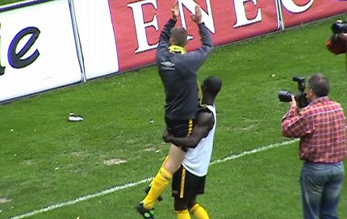

|
Roda JC - PSV (0-0) 22 mei 2005 |
Roda JC
- PSV (0-0) 22 mei 2005
Overbodig veel blauw voor een wedstrijd op een lome zondagmiddag.
Bert van Marwijk heeft ook een kaartje gekocht.
PSV, kampioen van Nederland heeft nauwelijks 300
uitsupporters....
Sfeer-actie voor Kah met geel, zwarte en witte ballonnen.
Een heel mooi gezicht.
Pa Modou Kah waardeert de actie met een applaus. Er werd ook een
groot
spandoek ontvouwen met de tekst YNWA in het Noors.
De ballenjongen verzamelt de zonnebloemen die voor Kah op het
veld zijn
geworpen.
BodNAR onze modepop met wederom een nieuwe kleur-spoeling.
In de eerste vijf minuten kreeg Roda twee prima kansen o.a. een
bal op de
paal van Sonko. Later kreeg Ji-sung Park van PSV nog een kans. Verder
was deze vriendelijk gezapige wedstrijd voornamelijk een verplicht nummer
waarin PSV geen overbodige krachten wenste te verspelen met het oog op
de Amstelfinale en Roda in elk geval niet wilde verliezen om het afscheids-
feest van Marc Luijpers waardig te maken.
Van Dijk lapt een PSV'er op. In deze wedstrijd vielen geen
kaarten.
Een vrije trap van Vennegoor of Hesselink wordt knap gestopt door
Kujovic.
Deze nep-Marc Luijpers deelt bier uit op de tribune.
De vrijgekomen plaatsen op Z16 werden ingenomen door de gasten
van
Charlton Athletic.
Na 10 min. in de tweede helft krijgt Marc Luijpers zijn
welverdiende
publiekswissel.
Waardering bij het publiek.
Geen extra tijd; Wegereef blaast zelfs enkele seconden te vroeg
af maar
dat geeft niet. iedereen is blij met de 0-0. Sergio is verwikkeld in een vrijage
met Addo.
Kah draagt een onderhemdje met daarop de beeltenis van zijn
overleden
vriendin.

Afscheid Louis Coolen.
Afscheid Wiljan Vloet.
Marc begint aan zijn definitieve afscheidsronde.

Kah draagt de allerminst lichte Luijpers!!!
Luijpers wordt gejonast door zijn ploegmaten.
Pa Modou Kah bedankt zich voor de zonnebloemen.
Het publiek verplaatst zich naar de Kickoff waar een extra
persconferentie
zal worden gehouden.
Yahhh, de driedubbele Rodameëdsjer-verklikker gaat af. Er komt
veel fraais
uit Bochus ;-)
Het was volle bak in de Kickoff. Op de voorgrond twee gasten van
Charlton.
Vol spanning wordt de extra persconferentie gevolgd. Hierin wordt
meegedeeld dat Kone voorlopig bij Roda blijft. Minimaal een jaar.
Het bleef nog lang gezellig in het home.
De sfeer steeg naar een hoogtepunt toen de gehele selectie naar
de Kickoff
kwam. Ook de lang geblesseerden zoals Van Dessel.
Sonko kreeg de Gambiaanse vlag omgehangen.
Kah valt van origine ook onder de vierkleur van Gambia.
Schaesberg Athletic ;-)

Colinet en Sergio zijn de sjlieps al kwijt.
Mark heeft de sjlieps van Marc bemachtigd.
Koffieboer vangt het shirt van Senden. Proficiat KB, precies de
juiste maat!
Behalve de Engelsen Van CAFC en van Watford waren er ook de
nodige
mensen van KV Mechelen.
Nog meer vlagvertoon in de Kickoff.
In de brasserie had Marc Luijpers zijn afscheidsfeest waar we
heel even
een kijkje namen. Links oud-Rodatrainer Sef Vergoossen en rechts de
inmiddels eveneeens (bijna) oud-Rodatrainer Wiljan Vloet.
Regillio Vrede verzorgt de catering.
Ruud Hesp. Misschien zien we hem gauw terug bij Roda JC.
Bekijk ook de foto's op PSV Zuipsite